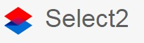
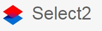
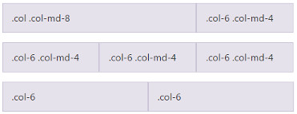
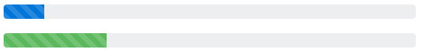
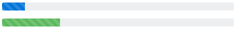

The JavaScript ecosystem and the modern Web
Réseau ARAMIS - 23/03/2017
 Baptiste Meurant
Baptiste MeurantWho am I?
The evolution of the Web
Usage
read-only & static
read-write & dynamic

User generated content
Web application architectures
New web application architectures and impacts for enterprisesThe mobile revolution


Responsive Web
Web browsers war


Web standards
Evolution of standards

HTML

The history of html5
CSS
JavaScript
JavaScript: the language ECMAScript: the standardBrowser support
HTML5 Please

Can I Use?
http://caniuse.com/Tools
We need tools

What kind of tool?
- Shim: Normalize browser API
- Polyfill: Conditional implementation of missing browser features
- Library: Set of reusable features / functions / components
- Micro library: A library dedicated to a single feature
- Framework: Set of structured patterns and behaviours that are part of a general programming model
Evolution

JavaScript Fatigue
JavaScript Fatigue Fatigue
 Javascript fatigue fatigue
Javascript fatigue fatigue
Polyfills: cross browser compatibility
Polyfills
A multitude of dedicated micro libraries, mostly composed of few functions implementing a feature on engines that do not yet support that feature. https://developer.mozilla.org/en-US/docs/Web/JavaScript/ReferenceModernizr
feature detection: executes code / polyfill based on the actual capabilities of the browserif (Modernizr.awesomeNewFeature) {
showOffAwesomeNewFeature();
} else {
getTheOldLameExperience();
}
npm install -g modernizrAutoprefixer
dealing with CSS vendor prefixeshttps://github.com/postcss/autoprefixer source
a {
transition: transform 1s
}
a {
-webkit-transition: -webkit-transform 1s;
transition: -ms-transform 1s;
transition: transform 1s
}Libraries: APIs & Components
General Libraries
Large libraries extending JavaScript APIs and functions to enrich & standardize the programming model. Unlike frameworks, they are not opinionated about your app's design.


- Prototype: DOM manipulation & events, object-oriented API, AJAX requests. Lost the game.
- jQuery: DOM manipulation & events, AJAX requests, utility functions, cross browser maganement.
- Underscore.js & lodash: both libraries provide hundred of utility functions to extend the basic JavaScript API such as map, filter, reduce
- RxJS: extends the API with reactive programming utilities using Observables
- ...
jQuery
The incontestable leaderDOM Manipulation:
// Changing the HTML of an element.
$( "#myDiv p:first" ).html( "New first paragraph!" );
// Manipulating a single attribute.
$( "#myDiv a:first" ).attr( "href", "newDestination.html" );var hiddenBox = $( "#banner-message" );
$( "#button-container button" ).on( "click", function( event ) {
hiddenBox.show();
});$.ajax({
url: "/api/getWeather",
data: {
zipcode: 97201
},
success: function( result ) {
$( "#weather-temp" ).html( "" + result + " degrees" );
}
});Do I still need jQuery?
"jQuery has helped tremendously to move the Web forward" Today's critics:- it is fat (270 kB / 85 kB)
- it is not enough modular (all in one)
- it is slow (especially on mobile)
- it prevent learning JavaScript properly
- it leads to bad code and practices
- you do not need everything
- you do not need it anymore
lodash
"A modern JavaScript utility library delivering modularity, performance & extras."- Overall leader for utility libs
- Relatively light
- In the browser or via npm
$ npm i -g npm
$ npm i --save lodash// Load the full build.
var _ = require('lodash');
// Load the core build.
var _ = require('lodash/core');
// Load method categories.
var array = require('lodash/array');
// Cherry-pick methods.
var at = require('lodash/at');
_.chunk(['a', 'b', 'c', 'd'], 2);
// => [['a', 'b'], ['c', 'd']]_.forEach([1, 2], function(value) {
console.log(value);
});
// => Logs `1` then `2`._.gt(3, 1);
// => true_.max([4, 2, 8, 6]);
// => 8_.random(0, 5);
// => an integer between 0 and 5_.has({ 'a': { 'b': 2 }}, 'a');
// => true_.camelCase('Foo Bar');
// => 'fooBar'RxJS
"Think of RxJS as Lodash for events."- For reactive & functional programming
- Events oriented
- Observer / Observable patterns
- Subscriptions
- Collections & iterators
- State management, purity
var button = document.querySelector('button');
button.addEventListener('click', () => console.log('Clicked!'));var button = document.querySelector('button');
Rx.Observable.fromEvent(button, 'click')
.subscribe(() => console.log('Clicked!'));var button = document.querySelector('button');
Rx.Observable.fromEvent(button, 'click')
.scan(count => count + 1, 0)
.subscribe(count => console.log(`Clicked ${count} times`));var button = document.querySelector('button');
Rx.Observable.fromEvent(button, 'click')
.throttleTime(1000)
.map(event => event.clientX)
.scan((count, clientX) => count + clientX, 0)
.subscribe(count => console.log(count));var observer = {
next: x => console.log('Observer got a next value: ' + x),
error: err => console.error('Observer got an error: ' + err),
complete: () => console.log('Observer got a complete notification')
};UI Components
GUI widgets: Data Grids, Tree Views, Forms, Sliders, Calendars, etc.
- Yui: catalog of HTML, JavaScript and HTML components. Discontinued since 2014.
- jQuery UI: "curated set of UI interactions, effects, widgets, and themes built on top of jQuery"
- Bootstrap, Foundation & Materialize: CSS frameworks with JavaScript UI components
- Single UI components: toastr, select2, pickadate, etc.
- ...
Jquery UI
- Catalog of Interactions, Widgets, Effects
- Configuration via options
- Depends on jQuery core
- All in one but you can make custom builds
- Via CDN, bower, npm
- 500 kB / 250 kB
https://jqueryui.com
$(function() {
$("#datepicker").datepicker();
});
Date:
Bootstrap
- CSS Framework
- JavaScript UI plugins & components
- Configuration via options
- Depends on jQuery core
- Plugins can be included all at once or individually
- Via CDN, bower, npm (preprocessors)
- 37 kB (minified)
- Bootstrap is the leader but Foundation is equivalent.
$('.dropdown-toggle').dropdown();
Single UI components
toastr is a Javascript library for non-blocking notifications
 
customizable select box with support for searching, tagging, infinite scrolling, ... And many, many others...
Specialized Libraries
- Moment.js & Moment Timezone: Libraries for date, time and timezone manipulation, comparison, parsing, displaying, etc.
- D3.js: Library for building interactive data visualization components based on documents, bubble charts, activity calendar, maps, words clouds, etc.
- Immutable.js: Facebook library to create and manipulate immutable data structures.
- PDF.js: Mozilla library to parse and render pdf files.
- ...
Moment.js
Moment.js is the JavaScript reference library for date time manipulations. Moment.js is an all in one library (without locales, 20 kB minified and gzipped). It is higly configurable and extensible via plugins. Locales can be included individually with bundlers / build tools.- Format dates:
- Relative time:
- Calendar:
- Locales:
moment().format('MMMM Do YYYY, h:mm:ss a'); // March 10th 2017, 12:45:16 ammoment("20111031", "YYYYMMDD").fromNow(); // 5 years agomoment().subtract(6, 'days').calendar(); // Last Saturday at 00:58moment.locale(); // fr
moment().format('LL'); // 10 mars 2017D3.js
D3.js is a library for manipulating documents based on data. It uses HTML, SVG & CSS to display documents as interactive data visualization such as graphs, trees, maps, clouds, histograms, etc.Micro libraries
http://microjs.com
- Thousands of micro libraries
- Lightweight
- Single purpose
- Extreme modularity
- Full control of the js size
- Popularity based on Github stars
Micro libraries: the leftpad example
leftpad, a library padding out the lefthand-side of strings with zeroes or spaces was unpublished from npm due to legal issues, breaking the Internet
- 11 lines of code
- ~0.5 KB
- 3M downloads a month
- thousands of broken builds

Manage libraries
- Thousands of libraries and utilities
- Different size and weight
- Many configuration options, combinaisons, versions, etc.
- No or very little help to structure / organize project / code
- How to choose the right ones?
- How to deal with potential conflicts?
- ...
Frameworks: more structured code
Library vs Framework
A library is essentially a set of functions that you can call, these days usually organized into classes. Each call does some work and returns control to the client.A framework embodies some abstract design, with more behavior built in. In order to use it you need to insert your behavior into various places in the framework either by subclassing or by plugging in your own classes.
Martin Fowler - inversionOfControl

- Inversion of Control
- Frameworks? Libraries? Both, or none? — My honest opinion
- Frameworks vs libraries
- What's the difference between a library and a framework?
A framework brings structure, opinion, design choices, philosophy where a library provides utilities & tooling.
CSS Frameworks
- Mobile first: responsive design, media queries.
- Browser compatibility.
- Structuring grid system based on Flexbox.
- Hundred of CSS base styles & classes.
- CSS components: buttons, tabs, navigation, panels, badges, etc.
- Strong impact on CSS and HTML design & structure
- All in one distribution or custom builds.
- Preprocessor distributions (Sass, Less).
- Very popular, very criticized.
- Tens of other micro CSS frameworks.
Bootstrap Grid system
- Based on Flexbox
- Rows and Columns
- 12 columns layout
- Mobile first & responsive
- Specific CSS & HTML structure
- Using Sass mixins or predefined classes
- Reordering (push / pull)
- Customizing (offset, gutter)
- Nesting
- ...
Desktop:

Mobile:

.col .col-md-8
.col-6 .col-md-4
.col-6 .col-md-4
.col-6 .col-md-4
.col-6 .col-md-4
.col-6
.col-6
Bootstrap components
- Alerts
- Badges
- Breadcrumbs
- Buttons
- Dropdowns
- Forms
- Groups
- Modals
- Navbars
- Pagination
- Progress
- Tooltips
- ...


 

JavaScript Frameworks: Why?
Good for large dynamic webapps, not suitable for document oriented websites.Take advantage of the work of great people & communities
Philosophy
- Focus on businesss
- Efficiency, developer productivity
- Cost (especially if open source)
- Don't reinvent the wheel
- Opinionations, idioms and programming model
- Conventions and best practices
- Better scalling on large apps, multiple teams
- Safety & Quality
- Governance and maintenance
- Need to be learnt
- Managing boilerplate
- Routing, managing URLs
- Fetching, saving data & APIs
- Advanced programming APIs
- Presenting data
- User interactions, data binding
- Reusable components
- Tooling, configuration & deployment
- Browser compatibility
- Serverside rendering?
- ...
javaScript Frameworks: How to choose?
TLDR; Don't know. At the end, it's a matter of opinion, taste, needs and contextDisclamer: I personaly am a big fan of ember.js
- JavaScript framework: making the right choice
- JavaScript framework comparison
- JavaScript frameworks: to use or not to use?
- 6 best JavaScript frameworks to learn in 2016
- Best Javascript frameworks
- 5 best JavaScript frameworks in 2017
- JavaScript Frameworks, why and when to use them
- Comparing Hot JavaScript Frameworks
JavaScript Frameworks
- Moderately opinionated
- Light conventions
- Steep learning curve
- Components oriented
- Dependency injection
- No built-in store
- Router as first class citizen
- Full HTML templates
- A little logic inside templated
- Created and supported by Google
- Most opinionated
- Conventions over configuration
- Steep learning curve
- Components oriented
- Dependency injection
- Fetching via ember-data
- Router as first class citizen
- Logic-less templates via glimmer / handlebars
- Created and supported by OSS
- Strong support of LinkedIn (Microsoft)
- Often presented more as a library
- Components oriented
- Less opinionated
- Focus on presenting / rendering
- Templates inside JS via JSX
- Introduced Virtual DOM
- Use Redux / Flux for more idomatic solution
- Use Director / react-router for routing
- Created & supported by Facebook
Angular2: Routing
// app/route.js
import { TodoListComponent } from './components/todo-list/todo-list.component';
export let routes = [
{ path: '', component: TodoListComponent, pathMatch: 'full' },
{ path: ':status', component: TodoListComponent }
];
// app/components/todo-list/todo-list.component.js
import { TodoStoreService } from '../../services/todo-store.service';
import template from './todo-list.template.html';
@Component({
selector: 'todo-list',
template: template
})
export class TodoListComponent {
constructor(todoStore: TodoStoreService, route: ActivatedRoute) {
this._todoStore = todoStore;
this._route = route;
this._currentStatus = '';
}
ngOnInit() {
this._route.params
.map(params => params.status).subscribe((status) => { this._currentStatus = status; });
}
...
}
Ember: Routing
// app/router.js
import Ember from 'ember';
import config from './config/environment';
const Router = Ember.Router.extend({
location: config.locationType,
rootURL: config.rootURL
});
Router.map(function () {
this.route('active');
this.route('completed');
});
export default Router;
// app/routes.application.js
import Ember from 'ember';
export default Ember.Route.extend({
repo: Ember.inject.service(),
model() {
return this.get('repo').findAll();
}
});
React: Routing (with Director)
// js/app.jsx
var app = app || {};
(function () {
'use strict';
app.ALL_TODOS = 'all';
app.ACTIVE_TODOS = 'active';
app.COMPLETED_TODOS = 'completed';
var TodoApp = React.createClass({
getInitialState: function () {
return {
nowShowing: app.ALL_TODOS,
editing: null,
newTodo: ''
};
},
componentDidMount: function () {
var setState = this.setState;
var router = Router({
'/': setState.bind(this, {nowShowing: app.ALL_TODOS}),
'/active': setState.bind(this, {nowShowing: app.ACTIVE_TODOS}),
'/completed': setState.bind(this, {nowShowing: app.COMPLETED_TODOS})
});
router.init('/');
},
...
}
Angular2: Templates
Ember: Templates
...
{{outlet}}
{{#if todos.length}}
{{#if canToggle}}
{{/if}}
{{#each todos as |todo|}}
{{todo-item todo=todo onStartEdit=(action 'disableToggle') onEndEdit=(action 'enableToggle')}}
{{/each}}
{{/if}}
React: Templates
//js/app.jsx
render: function () {
var todoItems = shownTodos.map(function (todo) {
return (
{todoItems}
);
}
return (
todos
{main}
{footer}
);
}